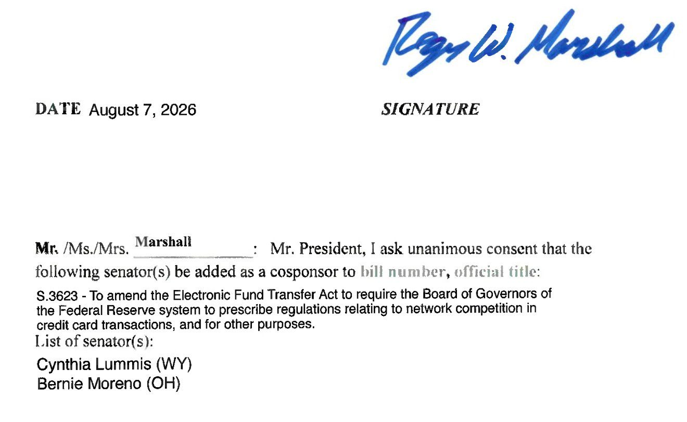
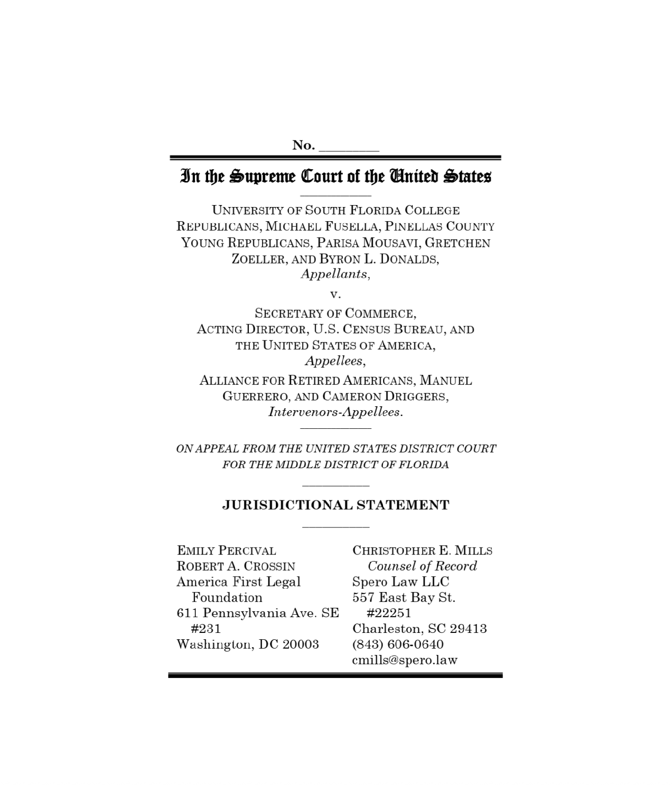
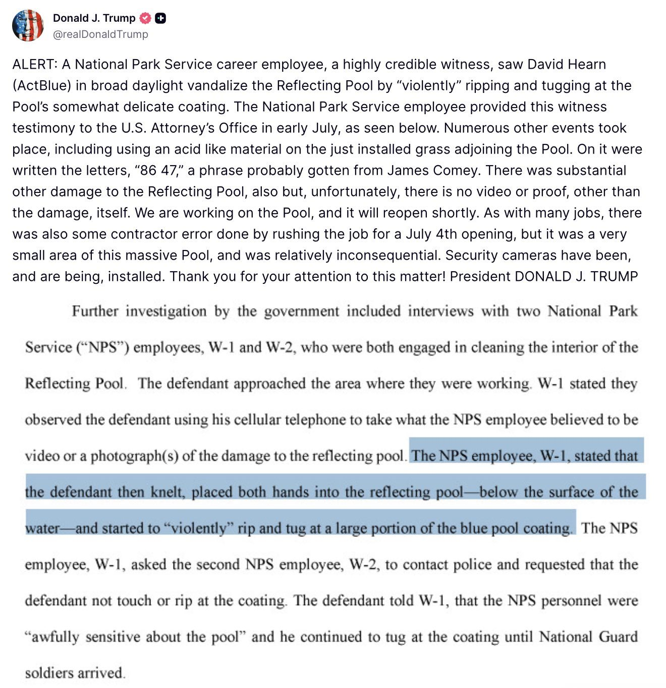

Majority Leader John Thune filed cloture on the motion to proceed to the CLARITY Act (H.R. 3633), teeing up a Senate vote at 2:15 PM on Tuesday, September 15, once the chamber returns from recess. For a chronicle that has followed crypto's long march from the GENIUS stablecoin law toward a full market-structure framework, the step is the clearest sign yet that the bill has a floor path. But the same night's bookmarks record a counter-current: senators and market-watchers accuse the banking industry of helping derail the Clarity timeline, and read the sudden revival of the Credit Card Competition Act — legislation the banks 'hate' for threatening swipe-fee revenue — as a shot across the bow. Sens. Cynthia Lummis and Bernie Moreno, 'infuriated' with the banks, signed on as co-sponsors overnight.
The International Monetary Fund published new analysis arguing that tokenization is 'more than a technology upgrade' — it 'can reshape how the financial system operates,' with policy choices that 'will matter.' For the Chronicle's Monetary Reset thread, it reads as the establishment catching up to a migration the bookmarks have tracked for months: real-world assets moving onto programmable rails.
A revived Credit Card Competition Act — which the banks 'hate' for threatening swipe-fee revenue — reads, one reporter suggests, as retaliation for the Clarity delay.
Sens. Lummis and Moreno co-sponsor the Credit Card Competition Act, 'infuriated,' a filing says, at the banking industry for delaying the Clarity Act.

'They're throwing the bus at crypto right now,' one trader shrugs, 'and it's not sinking.'
Japan's four largest life insurers reported a combined $96 billion in unrealized bond losses — 'things are heating up,' the post warns, filing the number under the long watch on the yen.
Trump muses he could 'wipe out' a $39 billion deficit with Switzerland 'in one stroke of the pen' by refusing their watches and goods: 'Fortunately, I'm a nice person.'
▶ Watch on X'I am deeply honored by the trust and confidence President Trump has placed in me to lead the Department of Justice as our great nation's 88th Attorney General,' Todd Blanche wrote on being confirmed — thanking a Senate that stayed 'late to complete this process' and the DOJ's 'dedicated public servants' for their work 'to uphold the law and keep our country safe.'
Secretary of State Marco Rubio marks the 250th with a meditation on ordered liberty: freedom 'was not the mere absence of limits' but rests on 'order and virtue' cultivated by family, church, and the practices of self-government.
▶ Watch on XTrump says his PAC 'MAGA Inc' holds $800 million to help Republicans win the midterms: 'I'm going to spend it.'
▶ Watch on XSixteen GOP attorneys general endorse Trump's Senate budget-resolution and SAVE America Act measures.
'If you're confused, that means you understand the situation perfectly,' Sen. John Kennedy says of the Senate's unfinished business — 'if senators start leaving, we can't get our work done.'
▶ Watch on X'President Trump is EXPOSING 2020 election fraud left and right,' one post argues. 'This CANNOT happen again. Pass the SAVE Act!'
▶ Watch on X“Order and virtue are the indispensable foundation of freedom.”— Secretary of State Marco Rubio
Newly declassified documents, one post reports, show former acting FBI Director Andrew McCabe launched a full counterintelligence investigation targeting President Trump in May 2017 — 'based in large part' on a Washington Post column and a CNN report. McCabe, the item notes with some relish, 'is now employed by CNN.'
America First Legal asks the Supreme Court to reverse a district court's 'erroneous ruling' in its challenge to the 2020 Census.

Trump says a National Park Service witness saw David Hearn — whom he ties to ActBlue — 'violently' rip at the Reflecting Pool's coating, with '86 47' written on acid-treated grass nearby; a witness statement, he says, reached the U.S. Attorney's Office in early July.

Outrage after a violent repeat offender with 60-plus charges, released by judges, allegedly killed 21-year-old U.S. Marine Daniel Montano in Wilmington, N.C.
▶ Watch on XICE arrested 1,200 illegal immigrants in Georgia, per one breaking post — even as another account describes agents in Springfield 'taking Haitians into custody,' with ex-TPS Haitians 'caught behind the wheel,' the writer claims, now subject to detention.
Stephen Miller: 'Nearly 40% of children in New York State are foreign-born or the children of migrants.'
A New York Post cover reports that New York 3rd-to-5th graders are failing basic reading tests, with more than half 'not even proficient' — data that lands beside a demographic argument the bookmarks keep circling, that the state's schools are being asked to absorb a fast-changing student body.
'Nearly 40% of children in New York State are foreign-born or the children of migrants,' one post argues — 'the education debate, like so many others, often disguises the real debate.'
China sanctioned six U.S. companies and imposed export controls on drones ahead of Xi Jinping's planned September visit to President Trump — even as Washington sanctioned Chinese shipping operators accused of handling Iranian fuel. China was 'among dozens of countries hit with double-digit tariffs last month,' the update notes, hardening the board before the two leaders meet.
▶ Watch on XTaiwan aims to produce 100,000 drones a month by 2030, building a 'drone hellscape' to deter a Chinese invasion.
Netanyahu rejects a 15-point Gaza plan from Trump's 'Board of Peace,' vowing no withdrawal 'until Hamas fully disarms' and 'no Palestinian state in Gaza or the West Bank' while he is Prime Minister.
NORAD says fighter jets intercepted several general-aviation aircraft over Bedminster.
GPT-5.6 Sol and Fable 5, per one post, cracked a 25-year-old open problem in wireless communication theory — 'a problem that remained unsolved for a quarter of a century,' now 'solved by AI.' It is filed under the Chronicle's thread on AI as a civilization-scale story: the machines are no longer only automating labor but closing standing questions in the sciences.
Sen. Josh Hawley calls AI surveillance pricing 'the unholy trinity' of what Americans hate — spying, gouging, and killing jobs — citing a Kroger shopper's 62-page data profile; the chain earned over $500 million selling such data, a third of its net income.
▶ Watch on X'You don't need to babysit agents,' an Anthropic engineer argues — 'you need loops and graphs that run them for you.'
▶ Watch on XA free-electron laser pitched as a next-gen EUV 'light utility' for chipmaking, powering many scanners at once. 'FEL FTW,' as Elon Musk put it.
The CIA is 'allegedly hoarding alien technology and keeping it hidden from the public,' per UFO whistleblower David Grusch.
The Air Force is accused of covering up footage of a UFO over a Colorado military base, per the New York Post.
'The Storm has arrived,' Gen. Michael Flynn wrote in a long post that reached for an older image: church bells rung to warn of an incoming storm — 'the question is anyone listening?' The country, he argued, has drifted toward socialism under a uniparty that 'brought us to our knees': 'we can't even pass VOTER ID.'
Hours earlier, President Trump had posted a brooding sky over his Aberdeen links — 'Trump Aberdeen!' — the kind of image his followers read as a wink. 'History,' Flynn wrote, 'has a tendency to repeat itself… sometimes the same plot with different actors.'